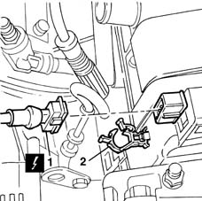
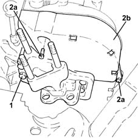
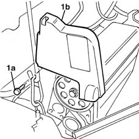
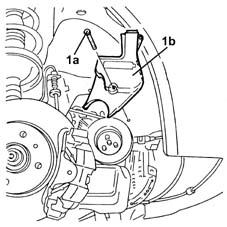
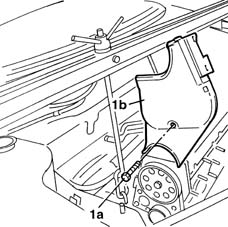

1032D12 timing system protective cover(s) - r + r
- Path
- Procedures > 10 ENGINE > 1032 TIMING SYSTEM > 1032D timing system protections > 1032D12 timing system protective cover(s) - r + r
- Kind
- repair procedure (removal / refitting; the operation number is the code)
- Applies to
- engines: 1.2 8v, 1.2 16v, 1.4 16v; all production periods
- Interactive page
- https://sloeber94.github.io/elrnDB-lYpsln/en/#/2428893
Applies to: engines: 1.2 8v; all production periods
 Removing
Removing
 Refitting
RefittingEnsure that the ignition key is in OFF position, then disconnect the battery negative terminal (-).
 | Name | Connector |
|---|---|---|
- | Battery |
1. Disconnect the electrical connection for the rpm sensor.
| Name | Connector |
|---|---|---|
1 | Rpm sensor |
2. Release the electrical wiring for the rpm sensor from the band.

Applies to: engines: 1.2 16v; all production periods
Removing
RefittingPosition the vehicle on the ramp.
Proceed with removal 4450B04 right front wheel r r .
Proceed with removal 7055B66 Engine compartment DUST SHIELD protection in right front wheel arch - R.R. .
Proceed with removal 1008B10 power unit front mount (timing side) flexible block - replace .
1. Undo the bolts fixing the power unit timing side rigid mount.
2. Undo the bolts (2a) and remove the upper protective timing cover (2b).

Applies to: engines: 1.4 16v; all production periods
Removing
RefittingPosition the vehicle on the ramp.
Proceed with removal 4450B04 right front wheel r r .
Proceed with removal 7055B66 Engine compartment DUST SHIELD protection in right front wheel arch - R.R. .
Proceed with removal 1008B10 power unit front mount (timing side) flexible block - replace .
1. Undo the bolts fixing the power unit timing side rigid mount.
2. Undo the bolts (2a) and remove the upper protective timing cover (2b).
Applies to: engines: 1.2 8v; all production periods
Disconnect the electrical connection from the cam angle sensor.
| Name | Connector |
|---|---|---|
- | Timing sensor |
Proceed with removal 1008B10 power unit front mount (timing side) flexible block - replace .
Proceed with removal 1008A46 cam shaft left rigid mount - r r .
1. Undo the bolts (1a) and remove the upper protective timing cover (1b).

Applies to: engines: 1.2 16v; all production periods
1. Undo the bolts (1a) and remove the lower protective timing cover (1b).

Applies to: engines: 1.4 16v; all production periods
1. Undo the bolts (1a) and remove the lower protective timing cover (1b).
Applies to: engines: 1.2 8v; all production periods
1. Undo the bolts (1a) and remove the lower protective timing cover (1b).

Applies to: engines: 1.2 16v; all production periods
Refitting
RemovingFit the lower protective timing cover and secure using the bolts.
Fit the upper protective timing gear cover and fix it using the bolts.
Tighten the bolts fixing the power unit rigid support to the recommended torque.
 | Fastening | Component | Ø | Value (daNm) |
|---|---|---|---|---|
- | - | - | - | - |
Proceed with refitting 1008B10 power unit front mount (timing side) flexible block - replace .
Proceed with refitting 7055B66 Engine compartment DUST SHIELD protection in right front wheel arch - R.R. .
Proceed with refitting 4450B04 right front wheel r r .
Remove the car from the ramps.
Applies to: engines: 1.4 16v; all production periods
Refitting
RemovingFit the lower protective timing cover and secure using the bolts.
Fit the upper protective timing gear cover and fix it using the bolts.
Tighten the bolts fixing the power unit rigid timing side mount to the recommended torque.
| Fastening | Component | Ø | Value (daNm) |
|---|---|---|---|---|
- | - | - | - | - |
Proceed with refitting 1008B10 power unit front mount (timing side) flexible block - replace .
Proceed with refitting 7055B66 Engine compartment DUST SHIELD protection in right front wheel arch - R.R. .
Proceed with refitting 4450B04 right front wheel r r .
Remove the car from the ramps.
Applies to: engines: 1.2 8v; all production periods
Refitting
RemovingFit the lower protective timing cover and secure using the bolts.
Fit the upper protective timing gear cover and fix it using the bolt.
Proceed with refitting 1008A46 cam shaft left rigid mount - r r .
Proceed with refitting 1008B10 power unit front mount (timing side) flexible block - replace .
Connect the electrical connection to the cam angle sensor.
Fix the electrical wiring for the rpm sensor using the band.
Connect the electrical connection for the rpm sensor.
Connect the negative (-) battery terminal.
Topics linked from this page (7)
- 1008A46 cam shaft left rigid mount - r r
- 1008B10 power unit front mount (timing side) flexible block - replace
- 4450B04 right front wheel r r
- 7055B66 Engine compartment DUST SHIELD protection in right front wheel arch - R.R.
- A1B Battery ( BATTERY NEGATIVE )
- K46 Rpm sensor
- K47 Timing sensor
Topics that link to this page (13)
- 0510A20 timing gear with belt drive - check - carry out operation with cam cover(s) removed and tappets adjusted
- 0510A30 cam lift - check with cam cover(s) removed
- 1016C10 cylinder head - r + r and replace gasket
- 1020D14 front crank shaft oil seal cover - r + r and replace seals for versions with oil pump on crank shaft, timing side
- 1020D18 front crank shaft cover oil seal - replace
- 1028H20 piston with connecting rod - r r
- 1032B10 toothed timing belt - r + r for timing adjustment or replacement
- 1032B46 toothed drive pulley - r + r
- 1032B52 toothed driven pulley (one) - r + r
- 1032C18 mobile timing system tensioner - r + r for 24 valve engines
- 1036B10 overhead camshaft - r r on vehicle
- 1056B90 system cable bundle - r + r
- 1088C10 water pump - r + r